Prepared for the paper Style transfer using sparse Autocorrelograms under submission.
| Source | |||||
|---|---|---|---|---|---|
|
suling.mp3 (source) 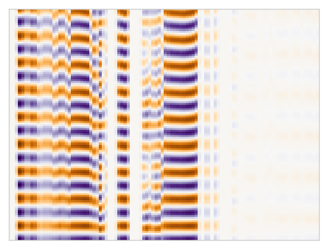 |
thumbpiano.mp3 (source) 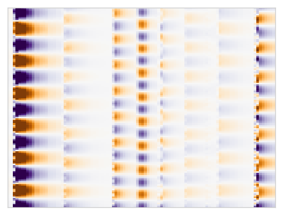 |
trumpetsolo.mp3 (source) 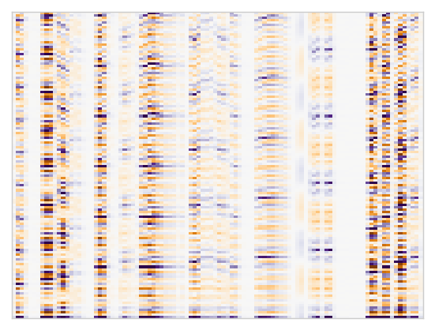 |
voiceguitar.mp3 (source) 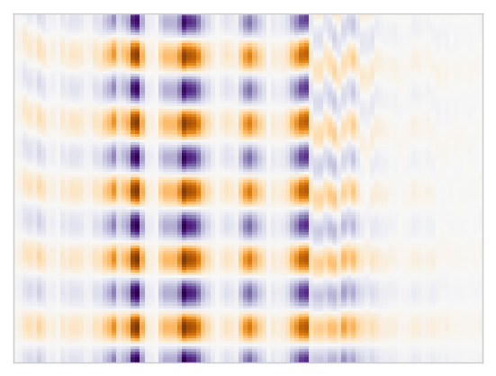 |
||
|
Target |
suling.mp3 (target) |
thumbpiano_suling_nimfks.mp3 (mosaic) 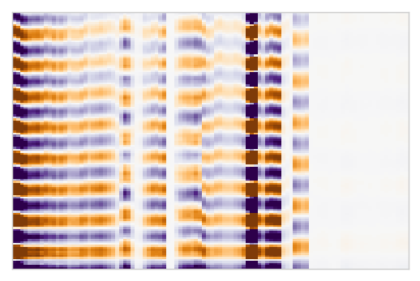 |
trumpetsolo_suling_nimfks.mp3 (mosaic) 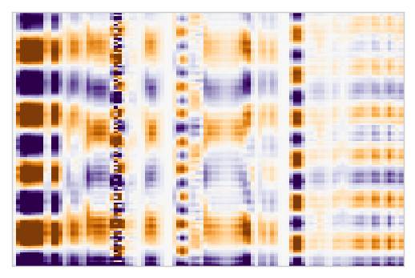 |
voiceguitar_suling_nimfks.mp3 (mosaic) 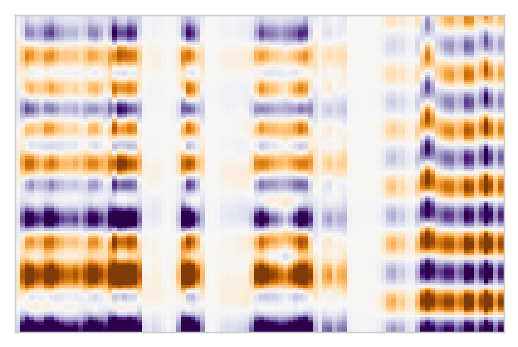 |
|
|
thumbpiano.mp3 (target) |
suling_thumbpiano_nimfks.mp3 (mosaic) 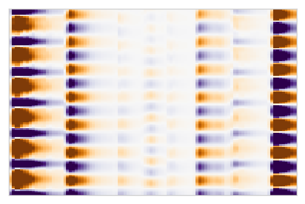 |
trumpetsolo_thumbpiano_nimfks.mp3 (mosaic) 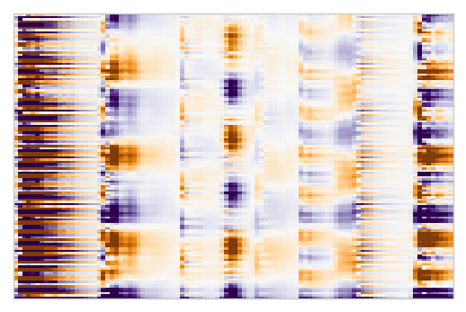 |
voiceguitar_thumbpiano_nimfks.mp3 (mosaic) 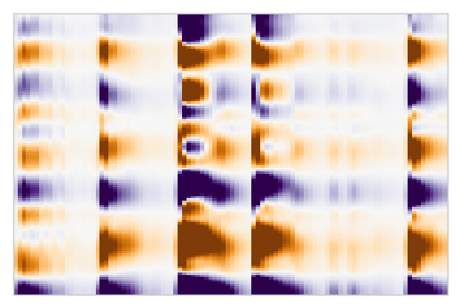 |
||
|
trumpetsolo.mp3 (target) |
suling_trumpetsolo_nimfks.mp3 (mosaic) 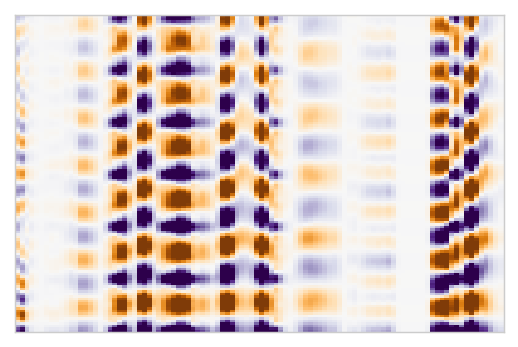 |
thumbpiano_trumpetsolo_nimfks.mp3 (mosaic) 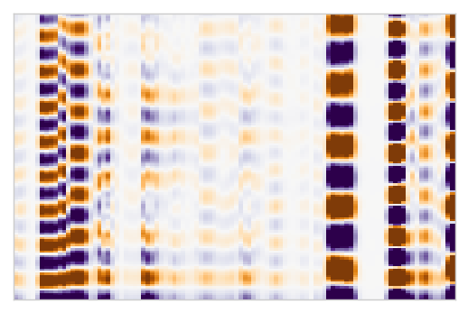 |
voiceguitar_trumpetsolo_nimfks.mp3 (mosaic) 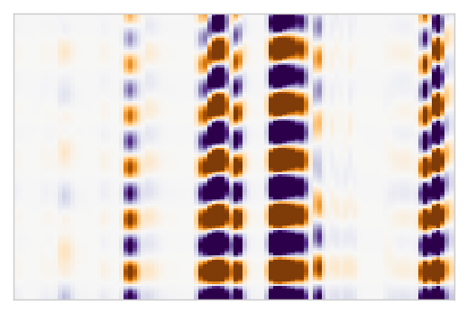 |
||
|
voiceguitar.mp3 (target) |
suling_voiceguitar_nimfks.mp3 (mosaic) 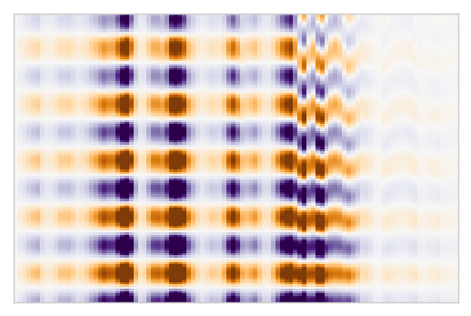 |
thumbpiano_voiceguitar_nimfks.mp3 (mosaic) 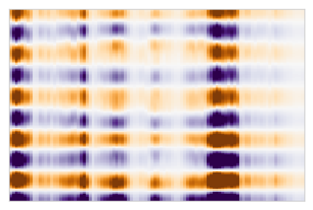 |
trumpetsolo_voiceguitar_nimfks.mp3 (mosaic) 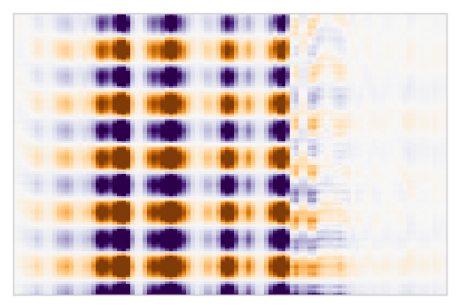 |
||
Recordings are used with licence of their respective creators, and may not be further redistributed without permission unless otherwise stated.
suling.mp3: Mohammed Dimas Firmansyahthumbpiano.mp3: Winter Riddletrumpetsolo.mp3: Mihai Sorohanvoiceguitar.mp3: Emm Collins and James Nicholssmoothsweep.mp3: Public domainLast updated